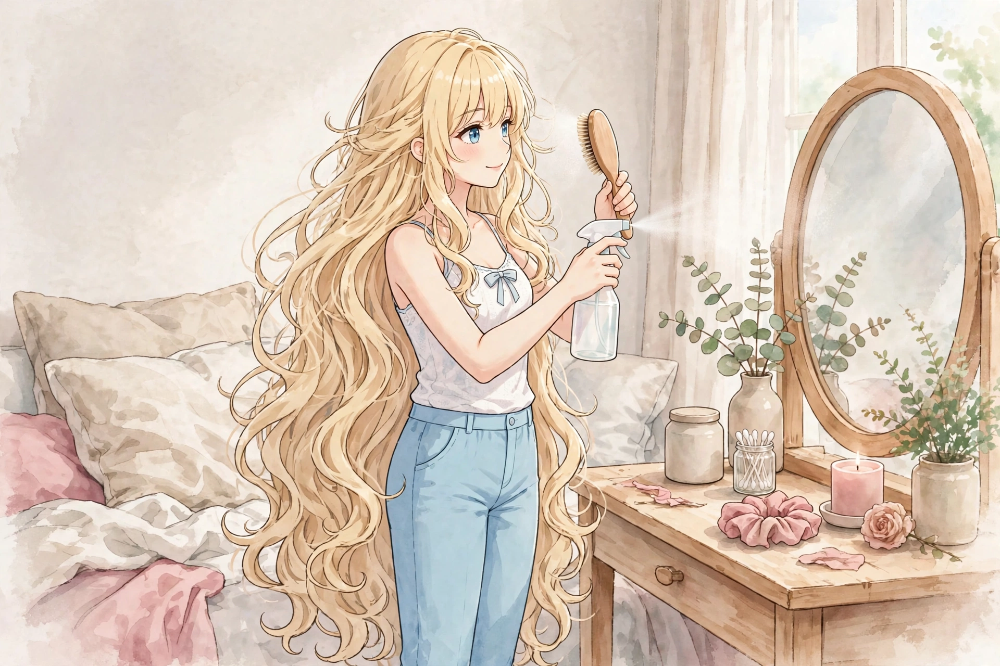

朝の寝ぐせ直しの手順

朝の寝ぐせ直しは、時間との勝負です。毛先ばかりをいじって時間をかけても、思うように収まらないことがあります。施術の現場の感覚では、寝ぐせの向きは毛先ではなく根元で決まっています。この記事では、根元を軸にした、朝の手順を整理します。
湿らせるのは、根元だけ
まず、寝ぐせのついている部分の根元を、霧吹きや濡らした手で湿らせます。範囲は、ぐせの出ている部分だけに絞ります。毛先まで全体を濡らすと、乾かす時間が長くなり、朝の手順としては重くなります。
湿らせる量は、根元がしっとりする程度が目安です。滴るほど濡らす必要はありません。水の量が少ないほど、後の手順は短く済みます。
ドライヤーは、向きを戻すために使う
湿らせた根元に、ドライヤーの温風を当てます。このとき、髪を引っ張るのではなく、指やブラシで「戻したい向き」と反対側に一度倒してから、戻したい向きへ返すと、根元の向きが動きやすくなります。最後に冷風を当てるか、手を離して少し置くと、向きが落ち着きます。
前髪は、左右に振ってから真ん中に戻すと、割れぐせが直りやすくなります。前髪だけは、この手順を丁寧にやる価値があります。
時間がない日は、優先順位を決める
どうしても時間がない朝は、前髪と分け目だけを直す省略版で十分です。顔まわりの印象は、この2か所で大きく決まります。後ろは、結ぶ・まとめるといった方法に切り替える判断もできます。
寝ぐせ直しは、根元を湿らせる、向きを戻す、冷まして固定。この3手順を小さく回すことが、朝の時短につながります。
前夜の準備で、朝の手間は減らせます。寝る前に一度ブラッシングして絡まりを取っておく、長い髪はゆるく結んで寝る、といった工夫です。枕とのこすれ方でもぐせのつき方は変わるため、自分の寝ぐせのパターン（いつも同じ場所に出る等）を知っておくと、朝に直す範囲も予測できるようになります。家族で洗面所を使う順番が決まっている家庭では、ドライヤーの時間が重ならないよう、寝ぐせ直しの担当時間を先に取る・後にずらすといった調整も、朝の流れを滑らかにします。寝ぐせ直しは、朝の技術と前夜の準備の、両輪で考えるものです。霧吹きとドライヤーは、洗面所の手の届く場所に定位置を作っておくと、朝の手順がさらに短くなります。道具の置き場所まで含めて「朝の型」として設計しておくことが、忙しい朝に迷わないための備えです。寝ぐせの出方は、季節や髪の長さでも変わります。自分のパターンの変化に気づいたら、手順の配分も少しずつ合わせ直していきます。

セラフィナ「寝ぐせは根元で直すのが近道。時間がない日は、前髪と分け目だけでも印象は変わるよ」